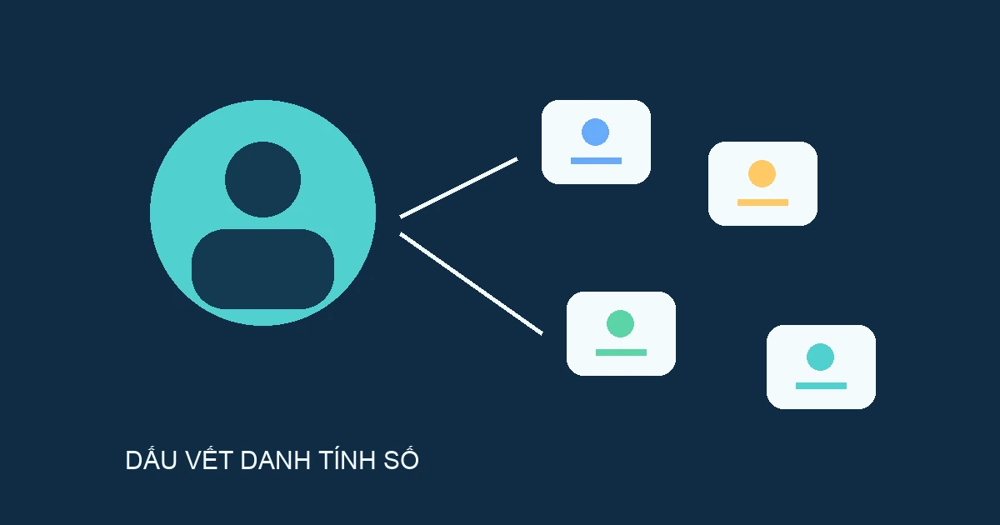
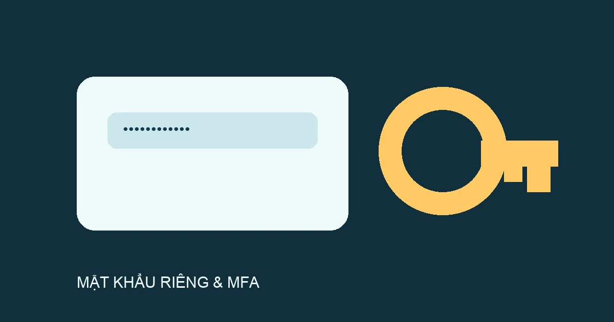
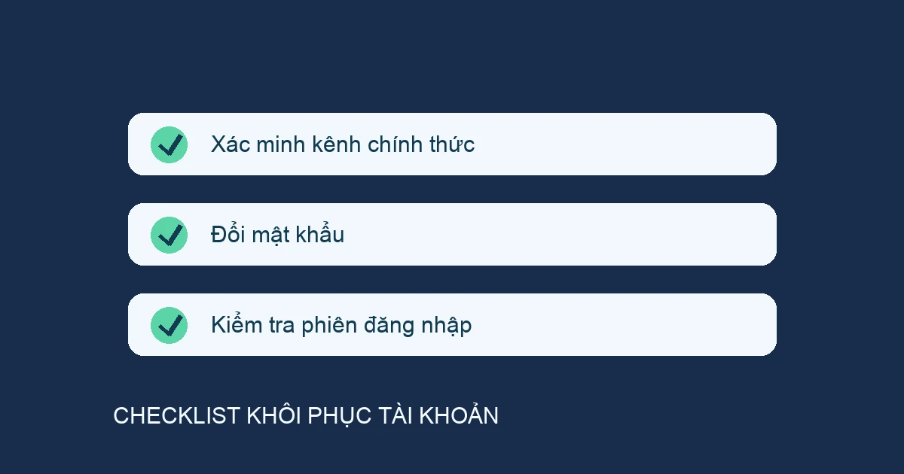

Bảo Vệ Danh Tính: Cách Nhận Biết Rủi Ro Và Giữ An Toàn Khi Lên Mạng
Bạn có bao giờ thắc mắc vì sao vừa tìm mua một món đồ, ít phút sau quảng cáo tương tự đã xuất hiện trên mạng xã hội? Hoặc nhận được cuộc gọi từ người lạ biết tên, số điện thoại và cả địa chỉ giao hàng của mình?
Những tình huống này cho thấy hoạt động trực tuyến có thể để lại nhiều dấu vết về mỗi người. Việc quảng cáo xuất hiện đúng sở thích không có nghĩa là danh tính của bạn đã bị đánh cắp, nhưng đó cũng là lời nhắc rằng dữ liệu cá nhân cần được quản lý cẩn thận. Tại Baomatso, chúng tôi tập trung giải thích những rủi ro thường gặp và các nguyên tắc đơn giản giúp bạn chủ động Bảo Vệ Danh Tính khi lên mạng.

Danh tính trực tuyến là gì và vì sao cần bảo vệ?
Nhiều người thường nghĩ thông tin cá nhân chỉ bao gồm số căn cước hoặc thông tin thẻ ngân hàng. Thực tế, những dấu vết bạn để lại trên Internet cũng góp phần tạo nên danh tính trực tuyến.
Danh tính này có thể bao gồm họ tên, ngày sinh, số điện thoại, email, hình ảnh cá nhân, tài khoản và thói quen tương tác hằng ngày. Khi được kết hợp với nhau, những thông tin tưởng chừng riêng lẻ ấy có thể tiết lộ khá nhiều điều về bạn.
Người dùng phổ thông cũng có thể gặp rủi ro, ngay cả khi tài khoản không có nhiều tiền. Thông tin cá nhân thu thập từ nhiều nguồn có thể bị lợi dụng để giả danh bạn, chẳng hạn như tạo tài khoản giả hoặc nhắn tin vay tiền người thân. Hiểu rõ giá trị của dữ liệu cá nhân cũng là cách giúp bạn bảo vệ quyền riêng tư trên môi trường số.
Nhiều người nghĩ rằng mình không có thông tin gì đáng để lộ. Nhưng đôi khi, một số điện thoại, ngày sinh và ảnh đại diện công khai cũng có thể trở thành manh mối để người khác giả mạo danh tính.
Những rủi ro phổ biến đối với danh tính trực tuyến
Khi thông tin cá nhân không được bảo vệ đúng cách, người dùng có thể gặp phải một số rủi ro thường thấy:
- Đánh cắp thông tin cá nhân: Dữ liệu có thể bị thu thập trái phép qua trang web giả mạo hoặc bị lộ sau sự cố tại dịch vụ bên thứ ba. Những thông tin này có thể bị sử dụng để gửi tin nhắn rác, thực hiện hành vi lừa đảo hoặc tiếp cận bạn bằng những lời mời không mong muốn.
- Mạo danh trực tuyến: Kẻ xấu có thể sử dụng ảnh và họ tên công khai của bạn để lập tài khoản giả, sau đó nhắn tin cho bạn bè hoặc người thân nhằm hỏi vay tiền.
- Chiếm đoạt tài khoản: Khi mật khẩu bị lộ hoặc bạn nhập thông tin đăng nhập vào trang web lừa đảo, người khác có thể tìm cách kiểm soát email hoặc tài khoản mạng xã hội của bạn.
- Lạm dụng dữ liệu cá nhân: Thông tin được cung cấp cho những dịch vụ thiếu tin cậy có thể bị chia sẻ trái phép hoặc sử dụng ngoài mục đích ban đầu, khiến bạn dễ trở thành mục tiêu của các cuộc tiếp cận mang tính lừa đảo.
Tình huống minh họa: Một người dùng đăng ảnh vé máy bay lên trang cá nhân để lưu lại kỷ niệm chuyến đi, nhưng vô tình để lộ họ tên và mã đặt chỗ. Trước đó, người này cũng công khai số điện thoại để bán hàng. Những dữ liệu đó có thể bị lợi dụng để tạo ra cuộc gọi giả danh nhân viên hỗ trợ, nhằm khai thác thêm thông tin cá nhân hoặc thông tin tài khoản.
Để hạn chế nguy cơ gặp phải những tình huống tương tự, bạn nên rèn luyện kỹ năng nhận diện dấu hiệu giả mạo. Theo hướng dẫn về hành vi đánh cắp danh tính của FTC, hành vi này xảy ra khi người khác sử dụng thông tin cá nhân hoặc tài chính của bạn mà không được phép. Dữ liệu bị lợi dụng có thể dẫn đến những giao dịch hoặc hoạt động đăng ký dịch vụ dưới danh nghĩa của bạn.
Dấu hiệu cho thấy danh tính của bạn có thể đang bị lạm dụng
Không phải sự cố nào cũng được phát hiện ngay lập tức. Tuy nhiên, một số dấu hiệu bất thường có thể xuất hiện trước khi bạn nhận ra tài khoản hoặc thông tin cá nhân đang gặp vấn đề:
- Nhận được thông báo đăng nhập từ thiết bị lạ hoặc vị trí bạn không nhận ra.
- Hộp thư liên tục có yêu cầu đặt lại mật khẩu dù bạn không thực hiện thao tác này.
- Tài khoản mạng xã hội tự động đăng bài hoặc gửi tin nhắn ngoài ý muốn.
- Người quen báo rằng họ nhận được tin nhắn hỏi vay tiền từ tài khoản mang tên và ảnh của bạn.
- Email hoặc số điện thoại dùng để khôi phục tài khoản bỗng nhiên bị thay đổi.
- Khi tìm tên hoặc số điện thoại của mình trên mạng, bạn phát hiện những trang hoặc thông tin chưa từng đăng ký.
Khi gặp những dấu hiệu trên, bạn nên bình tĩnh kiểm tra thay vì vội kết luận tài khoản đã bị chiếm quyền. Chẳng hạn, một tin nhắn chứa mã xác minh có thể xuất hiện do người khác thử đăng nhập hoặc nhập nhầm số điện thoại. Tương tự, vị trí đăng nhập hiển thị đôi khi chỉ là ước tính dựa trên địa chỉ IP, không phải lúc nào cũng phản ánh chính xác vị trí thiết bị. Hãy kiểm tra thêm thời gian, thiết bị và hoạt động tài khoản. Nếu nhận được liên kết đăng nhập đáng ngờ, đừng vội truy cập theo đường dẫn đó.
Cách bảo vệ danh tính trực tuyến trong cuộc sống hằng ngày

Hạn chế cung cấp thông tin cá nhân không cần thiết
Khi đăng ký tài khoản mới hoặc tham gia khảo sát trực tuyến, bạn nên xem xét liệu dịch vụ đó có thực sự cần ngày sinh hay địa chỉ nhà của mình hay không. Không phải biểu mẫu nào cũng cần được điền đầy đủ.
Nhiều người có thói quen cung cấp mọi thông tin được yêu cầu hoặc đăng ảnh hóa đơn giao hàng, giấy tờ tùy thân lên mạng xã hội. Những chi tiết này có thể tiết lộ nhiều dữ liệu hơn bạn nghĩ. Bạn có thể dùng email phụ cho các dịch vụ mua sắm thông thường và chỉ cung cấp thông tin nhạy cảm khi thực sự cần thiết, sau khi đã kiểm tra độ tin cậy của dịch vụ.
Dùng mật khẩu riêng biệt và xác thực đa yếu tố
Dùng chung một mật khẩu cho nhiều tài khoản làm tăng nguy cơ mất quyền kiểm soát các dịch vụ quan trọng. Nếu một trang web bị rò rỉ dữ liệu, kẻ xấu có thể thử sử dụng mật khẩu đó để truy cập email hoặc những tài khoản khác của bạn.
Hãy đặt mật khẩu mạnh và riêng biệt cho từng dịch vụ quan trọng, đồng thời bật xác thực đa yếu tố nếu có thể. Theo khuyến nghị xác thực đa yếu tố từ CISA, phương thức này bổ sung một bước kiểm tra ngoài mật khẩu, giúp tăng mức độ bảo vệ tài khoản ngay cả khi mật khẩu bị lộ. Tuy nhiên, đây không phải biện pháp bảo vệ tuyệt đối. Bạn vẫn cần cảnh giác với những yêu cầu xác minh bất thường.
Thận trọng với liên kết và yêu cầu xác minh
Kẻ gian thường tạo cảm giác khẩn cấp bằng những thông báo như "tài khoản sắp bị khóa" để khiến bạn vội vàng bấm vào đường link giả mạo. Một nguyên tắc quan trọng là không chia sẻ mã xác minh cho bất kỳ ai, kể cả người tự nhận là nhân viên ngân hàng hoặc bộ phận hỗ trợ kỹ thuật.
Trước khi nhập mật khẩu, hãy kiểm tra kỹ tên miền trên thanh địa chỉ của trình duyệt. Đừng chỉ dựa vào logo hoặc giao diện quen thuộc để xác định một trang web có đáng tin hay không. Nếu nhận được thông báo lạ, bạn nên tự mở ứng dụng hoặc trang web chính thức để kiểm tra thay vì truy cập theo đường dẫn được gửi sẵn.
Kiểm tra hoạt động và quyền truy cập tài khoản
Sau một thời gian sử dụng Internet, tài khoản email hoặc mạng xã hội có thể được liên kết với nhiều ứng dụng bên thứ ba. Nếu một dịch vụ trong số đó gặp sự cố bảo mật, dữ liệu được chia sẻ với dịch vụ ấy cũng có thể chịu ảnh hưởng.
Thỉnh thoảng, hãy kiểm tra danh sách thiết bị đang đăng nhập và thu hồi quyền truy cập ứng dụng đối với những dịch vụ không còn sử dụng. Bạn cũng nên xem lại chế độ hiển thị bài viết cá nhân, tránh công khai những thông tin không cần thiết.
Duy trì thói quen an toàn và tránh những sai lầm phổ biến
Không ít rủi ro bắt đầu từ việc người dùng phản ứng quá nhanh trước tin nhắn lạ. Chẳng hạn, khi có người tự nhận là nhân viên giao hàng và yêu cầu bấm link để xác nhận đơn, bạn không nên làm theo ngay. Hãy kiểm tra thông tin đơn hàng qua ứng dụng hoặc kênh liên hệ chính thức.
Bạn không cần thay đổi mọi thói quen trong một ngày. Hãy bắt đầu bằng việc kiểm tra liên kết trước khi truy cập, hạn chế chia sẻ dữ liệu nhạy cảm và bảo vệ kỹ email chính. Những thao tác nhỏ nhưng được duy trì đều đặn sẽ giúp giảm bớt nhiều rủi ro thường gặp.
Không cần cài đặt thật nhiều công cụ mới có thể sử dụng Internet an toàn hơn. Đôi khi, chỉ cần dừng lại vài giây trước khi gửi thông tin và không tiết lộ mã xác minh là bạn đã tránh được nhiều tình huống đáng tiếc.
Cần làm gì khi nghi ngờ danh tính bị xâm phạm?

Nếu phát hiện thông tin cá nhân hoặc tài khoản có dấu hiệu bị lợi dụng, bạn nên bình tĩnh xử lý từng bước để hạn chế thiệt hại:
- Ngừng cung cấp thông tin: Dừng cuộc trò chuyện và không gửi thêm dữ liệu nếu nguồn liên hệ có dấu hiệu đáng ngờ.
- Xác minh qua kênh chính thức: Tự tìm trang web hoặc số liên hệ chính thức của dịch vụ để kiểm tra thông báo vừa nhận. Không sử dụng thông tin liên hệ do người lạ gửi đến.
- Kiểm tra hoạt động đăng nhập: Truy cập tài khoản từ thiết bị đáng tin cậy để xem có thiết bị hoặc phiên đăng nhập bất thường hay không.
- Đổi mật khẩu và kiểm tra phiên đăng nhập: Nếu nghi ngờ thông tin đăng nhập bị lộ, hãy đổi mật khẩu từ kênh chính thức và đăng xuất những phiên không nhận ra. Đồng thời, kiểm tra email và số điện thoại khôi phục có bị thay đổi không. Nếu dùng lại mật khẩu đó ở dịch vụ khác, hãy thay đổi cả những mật khẩu liên quan.
- Lưu giữ thông tin đáng ngờ: Chụp màn hình tin nhắn, thông báo hoặc đường link liên quan để tiện đối chiếu khi cần.
- Liên hệ đơn vị cung cấp dịch vụ: Thông báo cho bộ phận hỗ trợ của nền tảng liên quan. Nếu phát hiện tài khoản giả mạo, bạn cũng nên cảnh báo người thân để họ tránh tương tác hoặc chuyển tiền nhầm.
Những bước trên giúp bạn chủ động hơn khi xử lý sự cố, đồng thời củng cố các nguyên tắc bảo vệ thông tin cá nhân cần thiết trong quá trình sử dụng Internet.
Khi nghi ngờ tài khoản gặp sự cố, đừng vội bấm vào đường link được gửi kèm lời hứa xử lý nhanh. Hãy đóng trang đáng ngờ và tự truy cập dịch vụ qua địa chỉ chính thức mà bạn đã biết.
Câu hỏi thường gặp về bảo vệ danh tính
1. Danh tính trực tuyến bao gồm những thông tin nào?
Danh tính trực tuyến có thể bao gồm họ tên, ngày sinh, số điện thoại, email, hình ảnh cá nhân, tài khoản đã đăng ký và một số dấu vết hoạt động của bạn trên Internet.
2. Thông tin cá nhân bị lộ có chắc chắn là đã bị đánh cắp danh tính không?
Không hẳn. Thông tin bị lộ chưa đồng nghĩa với việc người khác đã sử dụng nó trái phép. Tuy nhiên, dữ liệu này có thể làm tăng nguy cơ bị mạo danh hoặc lừa đảo.
3. Ít dùng mạng xã hội thì có cần quan tâm đến bảo vệ danh tính không?
Có. Ngay cả khi ít đăng bài, bạn vẫn có thể để lại thông tin qua email, hoạt động mua sắm trực tuyến, tài khoản đăng ký dịch vụ và các ứng dụng sử dụng hằng ngày.
4. Làm sao để duy trì thói quen an toàn trên mạng mà không thấy phiền phức?
Bạn không cần thực hiện mọi việc cùng lúc. Hãy ưu tiên bảo vệ email chính, sử dụng mật khẩu riêng biệt và kiểm tra kỹ liên kết trước khi nhập thông tin.
Giữ an toàn trên Internet không đòi hỏi bạn phải am hiểu mọi vấn đề kỹ thuật. Điều quan trọng là hiểu dữ liệu cá nhân có thể bị sử dụng như thế nào, nhận ra những dấu hiệu bất thường và biết cách xử lý khi cần. Bắt đầu từ những việc đơn giản như bảo vệ tài khoản chính, kiểm tra liên kết và hạn chế chia sẻ thông tin nhạy cảm, bạn sẽ từng bước chủ động hơn trong việc Bảo Vệ Danh Tính. Hy vọng những hướng dẫn này giúp bạn sử dụng Internet an toàn và yên tâm hơn mỗi ngày.